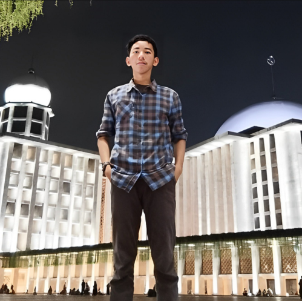
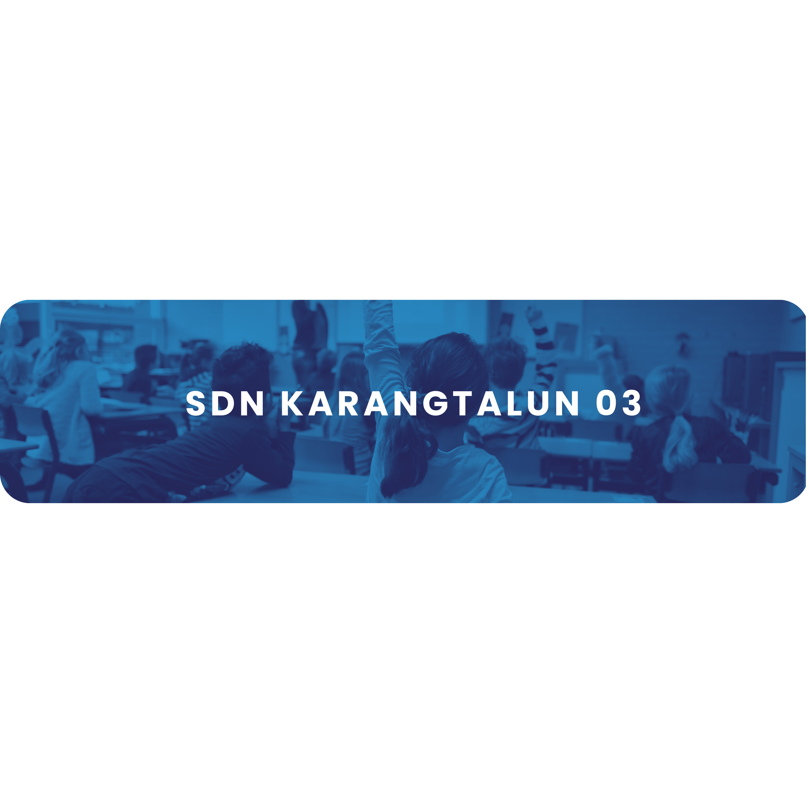
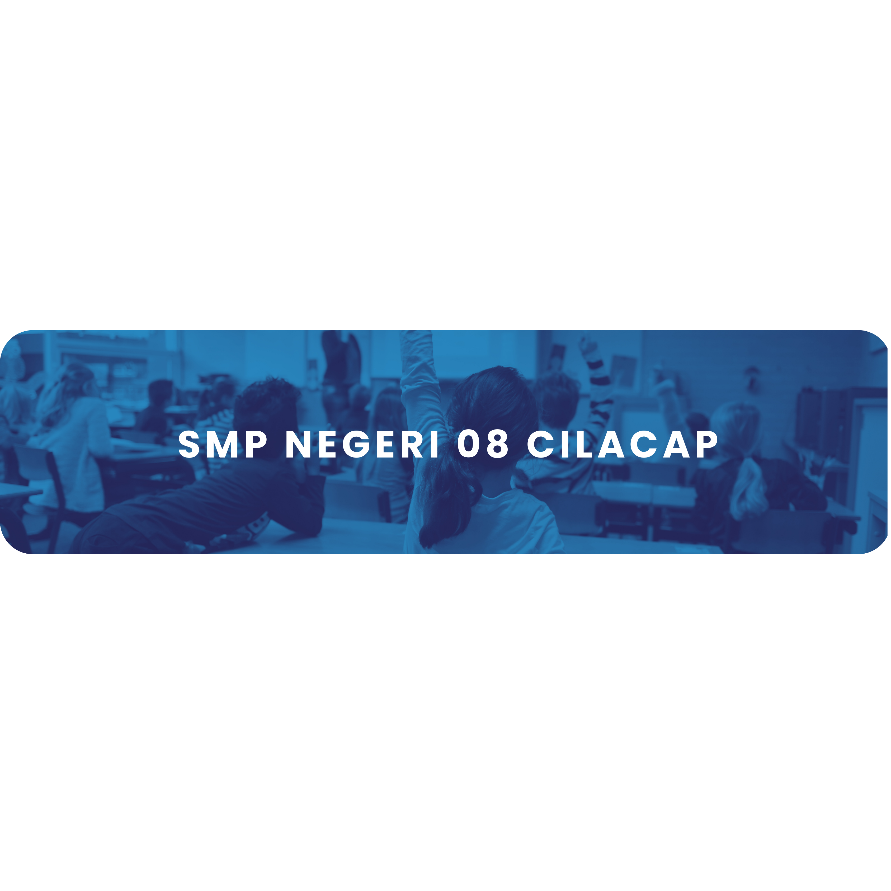

Jurusan Teknik Listrik. Seorang yang cekatan, sigap, dapat dan diandalkan,
mampu bekerja dalam tim dan dapat berkomunikasi dengan baik.
About Me
Saya seorang pendukung kuat open source, dan saya selalu tertarik mengerjakan proyek baru dengan orang-orang baru. Silakan periksa repositori saya dan jangan ragu untuk menghubungi WhatsApp atau email jika Anda mau. Saya seorang pendukung kuat open source, dan saya selalu tertarik mengerjakan proyek baru dengan orang-orang baru. Periksa repositori saya dan jangan ragu untuk menghubungi WhatsApp atau email jika Anda ingin berkolaborasi dalam proyek apa pun.
Kembali


SDN Karangtalun 03
Saya memulai perjalanan pendidikan saya di SDN Karangtalun 03 pada tahun 2011. Selama tahun-tahun bersekolah di sini, saya tidak hanya memperoleh pengetahuan akademis dasar seperti matematika, bahasa, dan lainya, tetapi juga nilai-nilai moral yang penting. Saya aktif dalam kegiatan ekstrakurikuler seperti olahraga, seni, dan kegiatan sosial, yang membantu saya mengembangkan keterampilan kepemimpinan dan kerjasama.

SMP NEGERI 08 CILACAP
Pada tahun 2017, saya mulai bersekolah di SMPN 08 Cilacap. Selama tiga tahun di sekolah ini, saya terus mengembangkan pengetahuan akademis dan keterampilan sosial. Saya aktif dalam berbagai kegiatan ekstrakurikuler, termasuk klub olahraga dan organisasi siswa.